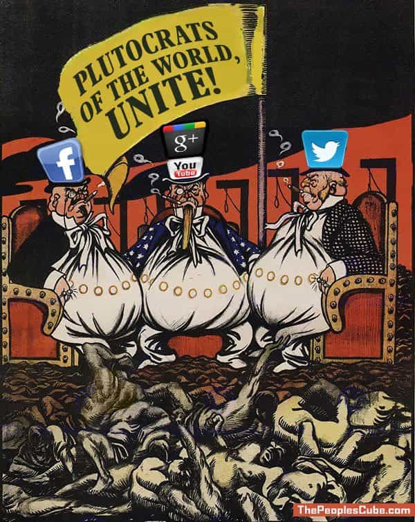

“The way to crush the bourgeoisie [middle class] is to grind them between the millstones of taxation and inflation.” – Vladimir Ilyich Lenin
Most people forget one of the reasons for the original thirteen colonies revolt against Britain and the king was because of high taxation and taxation without representation. Progressives and SJWs typically view taxation as a tool to help those in progressive “protected classes” which they call “the poor”. We hear the narrative “the rich don’t pay their fair share.” If the rich do not pay their fair share why are so many wealthy people for socialism? Why are some for higher taxes? Who are “the rich” progressives are referring to and why do wealthy progressives always advocate government involvement to address poverty, i.e. socialism.
Paying of taxes are an integral part of life. All of us use services provided by the government. Taxation is necessary for the functioning of any nation. High taxation can be used as a means to hinder, suppress and even discourage certain types of economic activity or economic activity in general. The power to tax contains the power to take 100 percent of the earnings from any economic or productive activity. Eventually economic activity will cease if 100 percent or the majority of the fruits of labor are taken and drained away through taxation. Any and all economic activity can be destroyed by taxation.
If any human undertaking can be wiped out by taxation, it follows that taxation may “defeat and render useless the power to create.” There would be no purpose in beginning undertakings if they were certain to be destroyed by taxation. The chances are good that man’s ingenuity would not be completely stifled by such government action, but it would surely be rendered largely useless. – Clarence Carson

Contrary to what we have been told, the elite like high taxes. Why would a wealthy person like high taxes? Because high taxes open the door to a complex tax code and cronyism. The more complex the tax code the easier it is to hide who is really paying and how much is being paid. Complication is a way of hiding true tax rates.
Understand that the elite rich separate themselves from the rest of “the rich”. They look out for themselves and advocate taxing others. The elite’s wealth is in various tax shelters, tax structures, or taxed differently (capital gains tax is one example) and have significantly lower tax rate percentages, if any taxes at all. These shelters are created in the tax code through cronyism. Taxation is a way for the elite to wage war on other people that do not go along with their progressive plans, world agenda, or are not part of their secret groups.
Socialism is presented as a “share the wealth” scheme to the masses. The wealth to be shared is YOUR wealth, YOUR money, YOUR resources, not the wealth and resources of the elite. This type of “equality” places the masses on the same rung of the social and economic ladder, the bottom, while an elite group of individuals directs and rules the masses. Thus, the environment is created as shown in George Orwell’s book Animal Farm where some of the proletariat (the common people) are more equal than others.
High taxation does not create a “Golden Age”
Progressives are looking to create a “golden age” economically, socially, etc. a socialist utopia through taxation. This golden age myth, this Blisstonia—akin to the fictitious world from The Simpsons episode, The Joy of the Sect, is among the delusions pushed by wealthy progressives. Progressives point to the “golden age” of the 1950s to show how “good” things were for everyone. Many people believe that the 1950s was a “golden age”. This is a myth. This myth is perpetuated because it feeds the false progressive narrative of high taxation equals high prosperity for everyone.
The United States experienced four recessions from 1948 to 1961. During the 1950s, the highest tax bracket was above 90 percent, typically 91 or 92 percent. The only time the rate was higher was during the last two years of World War II; the tax rate was 94 percent. Historian Brian Domitrovic has brief video to discussing the high tax rates of the 1950s.
People such as Nancy Pelosi, Meryl Streep, Oprah Winfrey, Seth MacFarlane, Michael Moore, Jeff Bezos, George Soros, Bill Gates, and Jamie Dimon are not okay with paying an income tax rate over 90 percent. Instead, these people want their constituents, fans, and followers to believe they are okay with paying high taxes; taxes percentages they do not really pay.
California has the highest poverty rate in the United States. Higher taxation and excessive regulation has not created create a new golden age in California. California’s high taxes are hurting the state and the people of California. The state attracts those that want to be on the government dole. California’s financial troubles are not by chance and is the outgrowth of identity politics and an elite attitude amongst California’s politicians at all levels of government.
Harvard professors, as an example, were ardent supporters of the Affordable Care Act, aka Obamacare. These same professors complained about the rising costs of their own individual health care because of the law. Progressives are fine with taxing as long as they are not the ones paying the taxes. A lot of progressives complained about the cap on the SALT deduction. Many progressives, for example in California and New York, liked the federal SALT deduction because it was a way of passing off California and New York state expenses onto the rest of the nation.
The Socialists/Progressives Are Coming for You
Telling other people they need to be more generous and then using taxation to confiscate money and property is covetous behavior. While those that have more abundantly should be generous, that generosity does not mean they should be unwise and foolish. I have encountered many people that are capable of working but refuse and expect handouts, government and otherwise. Hoarding wealth or using the arm of government to “redistribute” wealth is covetousness.
Progressives will quote surveys of the wealthy advocating for higher taxes, a higher minimum wage, and other government actions to combat poverty, but the progressives quoting such things are ignorant of who is actually paying the taxes. Beware of anyone that does not want to pay any taxes and those that call for high taxes for “the rich”. Politicians treat “high taxes” as a relative term and consider anyone making over $200,000 a year as “rich”. The taxes would be levied against people that earn a majority of their income by working for someone else or have small businesses such as sole-proprietorships or LLCs.
Progressives will not be happy until “everyone” is on the same level socially and economically. I place everyone in quotes because most are too ignorant to realize that the George Soroses, Nancy Pelosis, and Oprah Winfreys of the world while advocating for “equality” will live in closed off estates from the rest of us. Just like the pigs lived in the farm house after ousting the farmer in George Orwell’s Animal Farm.
The elite advocate for government involvement and high taxation because more of your money will end up in their pockets through subsidies and other government programs designed to help “the poor”. Taxes will eventually have to be increased to keep the government functioning because more and more government revenue is in the pockets of the elite and their cronies.
Billionaire Jeff Bezos hates paying taxes but is okay with paying workers low wages so they require welfare to survive; of course, other people other than Jeff Bezos are paying the taxes for government welfare his employees receive. Bill Gates says rich people need to pay more in taxes. No one prevents the Bill Gates, Oprah Winfreys, Nancy Pelosis, Jeff Bezoses, and George Soroses of the world from paying their employees higher wages and taking less for themselves without government involvement. The mere fact these people advocate for more government involvement should immediately raise some serious questions.
The high taxation is part of the march toward socialism. Progressives want to use the government to loot you and tell you it is for your own good or the good of others. For the elite, high taxes is less about money and more about control of your every act, word, and thought, i.e. socialism. Socialism and high taxation helps only the elite.
Read More: How Wealthy Americans Dodge Taxes